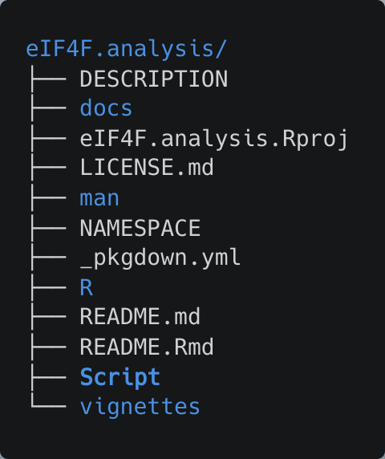
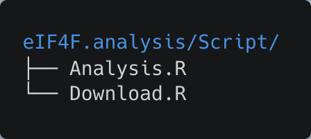
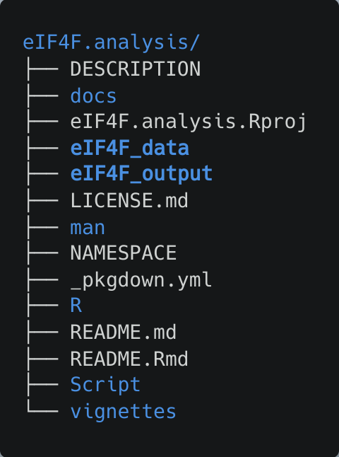
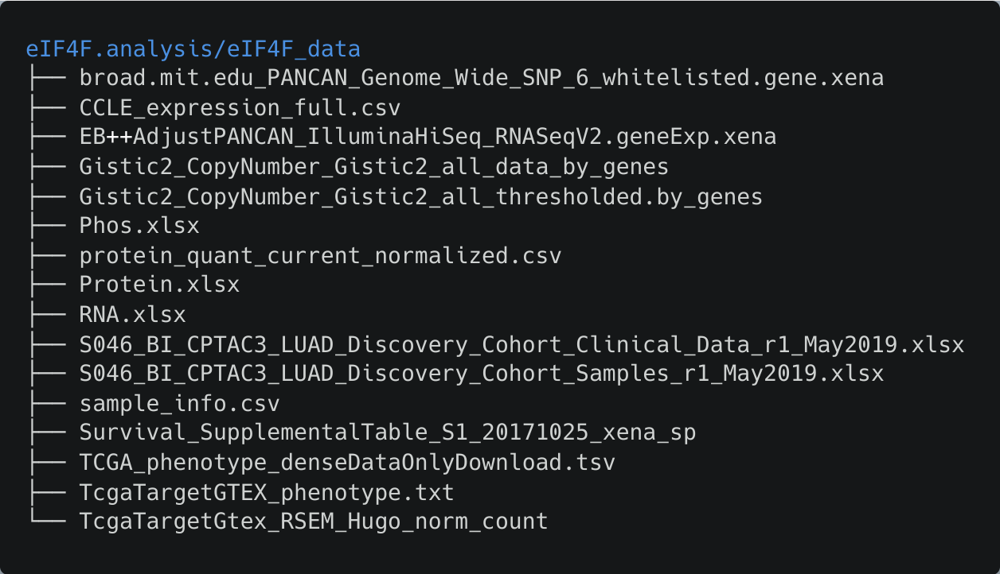
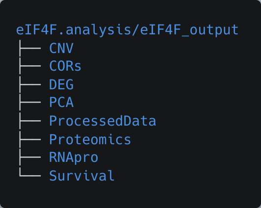

eIF4F.analysis is an R-based computational pipeline to understand function and regulation of interactions among translation initiation complex proteins across tumor types. This package provides a toolkit for analyses including copy number status, prognosis, subunit abundance and stoichiometry, gene coexpression and pathway activity, and mRNA/protein correlation, all using publicly available multi-omics data.
Before you begin
Perform the following steps to ensure the proper operation of this package.
System requirements
This project makes use of various resource-intensive R packages, which carries relatively high demands for compute, RAM, and disk I/O resources (but not for graphics resources). Nonetheless, the necessary hardware is attainable in high-end consumer-grade systems.
Description of development systems
The following systems have been used to execute the R scripts in this project:
-
(verified) System76 “Serval” mobile workstation
- Intel i7-8700k CPU
- 64GB RAM (DDR4-3000, non-ECC)
- Samsung NVMe Pro SSD
- Pop!_OS 22.04 LTS
- RStudio
- R 4.2.1
-
(verified) PowerSpec G460 desktop computer
- Intel i7-8700k CPU
- 64GB RAM (DDR4-3200, non-ECC)
- Intel M.2 SATA SSD
- Samsung NVMe Evo+ SSD
- Windows 10 Pro
- RStudio for Windows
- R 4.0.3
Additional details of these environments are provided in the “Session Information” section below.
Install R/RStudio
- Download & install R 4.2.1, if not already installed.
- Download & install RStudio, if not already installed. https://www.rstudio.com/products/rstudio/download/
Install dependent libraries
The required packages will be automatically installed at the first time you run eIF4F.analysis. The following commands are useful to install dependent R packages manually.
# use Bioconductor version 3.15 for package installation
if (!require("BiocManager", quietly = TRUE))
install.packages("BiocManager")
BiocManager::install(version = "3.15")
# install required packages
bio_pkgs <- c("AnnotationDbi", "circlize", "clusterProfiler",
"ComplexHeatmap", "corrplot", "data.table", "devtools",
"dplyr", "EnvStats", "eulerr", "factoextra",
"FactoMineR", "forcats", "forestplot", "ggfortify",
"ggplot2", "ggpubr", "graphics", "grDevices", "grid",
"limma", "missMDA", "org.Hs.eg.db", "purrr",
"RColorBrewer", "ReactomePA", "RCurl","readr", "readxl",
"reshape2", "R.utils", "scales", "stats", "stringr",
"survival", "survivalAnalysis", "tibble", "tidyr",
"tidyselect", "utils")
BiocManager::install(bio_pkgs)
# load required packages
lapply(bio_pkgs, require, character.only = TRUE)Install eIF4F analysis package
Please install the development version of eIF4F.analysis from GitHub and load it in the R console.
# Install eIF4F.analysis package
devtools::install_github("a3609640/eIF4F.analysis")
# Load eIF4F.analysis package
library(eIF4F.analysis)Clone the repository files
Open the terminal and run the following command line to clone our GitHub repository for eIF4F.analysis under the home directory.
The package files will be stored under ~/eIF4F.analysis. The cloned repository contains the following files and folders.

Under the ~/eIF4F.analysis/Script folder, two R scripts Download.R and Analysis.R are stored for acquiring datasets and performing analysis.

Open Download.R file in RStudio, verify the directories for input and output files as following.
# default directory for data download and output storage
data_file_directory <- "~/eIF4F.analysis/eIF4F_data"
output_directory <- "~/eIF4F.analysis/eIF4F_output"Download datasets
Download.R downloads all needed datasets (TGCA, GTEx, CPTAC, CCLE, etc.) from URLs and decompresses them. To run the Download.R file in RStudio with the following command line.
source("~/eIF4F.analysis/Script/Download.R")Download.R will (unless modified) create ~/eIF4F.analysis/eIF4F_data, where all needed datasets (TGCA, GTEx, CPTAC, CCLE etc.) will be stored and decompressed, and ~/eIF4F.analysis/eIF4F_output, where all the analyzed results will be stored.

After the completion of the download and unzip steps, the eIF4F_data folder contains 16 data files, with a collective size of 15GB.

Perform Analyses
Analysis.R contains ten exported functions in the package to initialize package and execute all analyses presented in (Wu and Wagner, 2021). The users can simply execute the following command in RStudio to get all analyses performed.
source("~/eIF4F.analysis/Script/Analysis.R")Analysis results to be automatically stored under ~/eIF4F.analysis/eIF4F_data/ in eight sub-directories.

Tutorial
Tutorial of executing each function from Analysis.R is available at https://a3609640.github.io/eIF4F.analysis/articles/eIF4F_analysis.html
Documentations for exported and internal function are available at https://a3609640.github.io/eIF4F.analysis/reference/index.html
Session information
The version information of R, Linux and attached or loaded packages for developing this package is the following.
> sessioninfo::session_info()
─ Session info ───────────────────────────────────────────────────────
setting value
version R version 4.2.1 (2022-06-23)
os Pop!_OS 22.04 LTS
system x86_64, linux-gnu
ui RStudio
language en_US:en
collate en_US.UTF-8
ctype en_US.UTF-8
tz America/New_York
date 2022-10-05
rstudio 2022.07.1+554 Spotted Wakerobin (desktop)
pandoc 2.9.2.1 @ /usr/bin/pandoc
─ Packages ───────────────────────────────────────────────────────────
package * version date (UTC) lib source
abind 1.4-5 2016-07-21 [1] CRAN (R 4.2.0)
AnnotationDbi * 1.58.0 2022-04-26 [1] Bioconductor
ape 5.6-2 2022-03-02 [1] CRAN (R 4.2.0)
aplot 0.1.7 2022-09-06 [1] CRAN (R 4.2.1)
assertthat 0.2.1 2019-03-21 [1] CRAN (R 4.2.0)
backports 1.4.1 2021-12-13 [1] CRAN (R 4.2.0)
Biobase * 2.56.0 2022-04-26 [1] Bioconductor
BiocGenerics * 0.42.0 2022-04-26 [1] Bioconductor
BiocParallel 1.30.3 2022-06-05 [1] Bioconductor
Biostrings 2.64.1 2022-08-18 [1] Bioconductor
bit 4.0.4 2020-08-04 [1] CRAN (R 4.2.0)
bit64 4.0.5 2020-08-30 [1] CRAN (R 4.2.0)
bitops 1.0-7 2021-04-24 [1] CRAN (R 4.2.0)
blob 1.2.3 2022-04-10 [1] CRAN (R 4.2.0)
broom 1.0.1 2022-08-29 [1] CRAN (R 4.2.1)
cachem 1.0.6 2021-08-19 [1] CRAN (R 4.2.0)
car 3.1-0 2022-06-15 [1] CRAN (R 4.2.0)
carData 3.0-5 2022-01-06 [1] CRAN (R 4.2.0)
cellranger 1.1.0 2016-07-27 [1] CRAN (R 4.2.0)
checkmate 2.1.0 2022-04-21 [1] CRAN (R 4.2.0)
circlize 0.4.15 2022-05-10 [1] CRAN (R 4.2.0)
cli 3.4.1 2022-09-23 [1] CRAN (R 4.2.1)
clue 0.3-61 2022-05-30 [1] CRAN (R 4.2.0)
cluster 2.1.4 2022-08-22 [1] CRAN (R 4.2.1)
clusterProfiler 4.4.4 2022-06-21 [1] Bioconductor
codetools 0.2-18 2020-11-04 [4] CRAN (R 4.2.0)
colorspace 2.0-3 2022-02-21 [1] CRAN (R 4.2.0)
ComplexHeatmap 2.12.1 2022-08-09 [1] Bioconductor
corrplot 0.92 2021-11-18 [1] CRAN (R 4.2.0)
cowplot 1.1.1 2020-12-30 [1] CRAN (R 4.2.0)
crayon 1.5.2 2022-09-29 [1] CRAN (R 4.2.1)
data.table 1.14.2 2021-09-27 [1] CRAN (R 4.2.0)
DBI 1.1.3 2022-06-18 [1] CRAN (R 4.2.0)
digest 0.6.29 2021-12-01 [1] CRAN (R 4.2.0)
DO.db 2.9 2022-06-07 [1] Bioconductor
doParallel 1.0.17 2022-02-07 [1] CRAN (R 4.2.0)
DOSE 3.22.1 2022-08-30 [1] Bioconductor
downloader 0.4 2015-07-09 [1] CRAN (R 4.2.0)
dplyr 1.0.10 2022-09-01 [1] CRAN (R 4.2.1)
DT 0.25 2022-09-12 [1] CRAN (R 4.2.1)
eIF4F.analysis * 0.1.0 2022-10-10 [1] local
ellipsis 0.3.2 2021-04-29 [1] CRAN (R 4.2.0)
emmeans 1.8.1-1 2022-09-08 [1] CRAN (R 4.2.1)
enrichplot 1.16.2 2022-08-30 [1] Bioconductor
EnvStats 2.7.0 2022-03-07 [1] CRAN (R 4.2.0)
estimability 1.4.1 2022-08-05 [1] CRAN (R 4.2.1)
eulerr 6.1.1 2021-09-06 [1] CRAN (R 4.2.0)
factoextra 1.0.7 2020-04-01 [1] CRAN (R 4.2.0)
FactoMineR 2.6 2022-09-09 [1] CRAN (R 4.2.1)
fansi 1.0.3 2022-03-24 [1] CRAN (R 4.2.0)
farver 2.1.1 2022-07-06 [1] CRAN (R 4.2.0)
fastmap 1.1.0 2021-01-25 [1] CRAN (R 4.2.0)
fastmatch 1.1-3 2021-07-23 [1] CRAN (R 4.2.0)
fgsea 1.22.0 2022-04-26 [1] Bioconductor
flashClust 1.01-2 2012-08-21 [1] CRAN (R 4.2.0)
forcats 0.5.2 2022-08-19 [1] CRAN (R 4.2.1)
foreach 1.5.2 2022-02-02 [1] CRAN (R 4.2.0)
forestplot 3.1.0 2022-10-09 [1] CRAN (R 4.2.1)
generics 0.1.3 2022-07-05 [1] CRAN (R 4.2.0)
GenomeInfoDb 1.32.4 2022-09-06 [1] Bioconductor
GenomeInfoDbData 1.2.8 2022-06-07 [1] Bioconductor
GetoptLong 1.0.5 2020-12-15 [1] CRAN (R 4.2.0)
ggforce 0.4.1 2022-10-04 [1] CRAN (R 4.2.1)
ggfortify 0.4.14 2022-01-03 [1] CRAN (R 4.2.0)
ggfun 0.0.7 2022-08-31 [1] CRAN (R 4.2.1)
ggplot2 3.3.6 2022-05-03 [1] CRAN (R 4.2.0)
ggplotify 0.1.0 2021-09-02 [1] CRAN (R 4.2.0)
ggpubr 0.4.0 2020-06-27 [1] CRAN (R 4.2.0)
ggraph 2.0.6 2022-08-08 [1] CRAN (R 4.2.1)
ggrepel 0.9.1 2021-01-15 [1] CRAN (R 4.2.0)
ggsignif 0.6.3 2021-09-09 [1] CRAN (R 4.2.0)
ggtree 3.4.2 2022-08-14 [1] Bioconductor
GlobalOptions 0.1.2 2020-06-10 [1] CRAN (R 4.2.0)
glue 1.6.2 2022-02-24 [1] CRAN (R 4.2.0)
GO.db 3.15.0 2022-06-07 [1] Bioconductor
GOSemSim 2.22.0 2022-04-26 [1] Bioconductor
graph 1.74.0 2022-04-26 [1] Bioconductor
graphite 1.42.0 2022-04-26 [1] Bioconductor
graphlayouts 0.8.2 2022-09-29 [1] CRAN (R 4.2.1)
gridExtra 2.3 2017-09-09 [1] CRAN (R 4.2.0)
gridGraphics 0.5-1 2020-12-13 [1] CRAN (R 4.2.0)
gtable 0.3.1 2022-09-01 [1] CRAN (R 4.2.1)
hms 1.1.2 2022-08-19 [1] CRAN (R 4.2.1)
htmltools 0.5.3 2022-07-18 [1] CRAN (R 4.2.1)
htmlwidgets 1.5.4 2021-09-08 [1] CRAN (R 4.2.0)
httr 1.4.4 2022-08-17 [1] CRAN (R 4.2.1)
igraph 1.3.5 2022-09-22 [1] CRAN (R 4.2.1)
IRanges * 2.30.1 2022-08-18 [1] Bioconductor
iterators 1.0.14 2022-02-05 [1] CRAN (R 4.2.0)
jsonlite 1.8.2 2022-10-02 [1] CRAN (R 4.2.1)
KEGGREST 1.36.3 2022-07-12 [1] Bioconductor
km.ci 0.5-6 2022-04-06 [1] CRAN (R 4.2.0)
KMsurv 0.1-5 2012-12-03 [1] CRAN (R 4.2.0)
knitr 1.40 2022-08-24 [1] CRAN (R 4.2.1)
labeling 0.4.2 2020-10-20 [1] CRAN (R 4.2.0)
lattice 0.20-45 2021-09-22 [4] CRAN (R 4.2.0)
lazyeval 0.2.2 2019-03-15 [1] CRAN (R 4.2.0)
leaps 3.1 2020-01-16 [1] CRAN (R 4.2.0)
lifecycle 1.0.3 2022-10-07 [1] CRAN (R 4.2.1)
limma 3.52.3 2022-09-11 [1] Bioconductor
log4r 0.4.2 2021-11-04 [1] CRAN (R 4.2.1)
magrittr 2.0.3 2022-03-30 [1] CRAN (R 4.2.0)
MASS 7.3-58.1 2022-08-03 [1] CRAN (R 4.2.1)
Matrix 1.5-1 2022-09-13 [1] CRAN (R 4.2.1)
matrixStats 0.62.0 2022-04-19 [1] CRAN (R 4.2.0)
memoise 2.0.1 2021-11-26 [1] CRAN (R 4.2.0)
mgcv 1.8-40 2022-03-29 [4] CRAN (R 4.2.0)
mice 3.14.0 2021-11-24 [1] CRAN (R 4.2.0)
missMDA 1.18 2020-12-11 [1] CRAN (R 4.2.0)
multcomp 1.4-20 2022-08-07 [1] CRAN (R 4.2.1)
multcompView 0.1-8 2019-12-19 [1] CRAN (R 4.2.1)
munsell 0.5.0 2018-06-12 [1] CRAN (R 4.2.0)
mvtnorm 1.1-3 2021-10-08 [1] CRAN (R 4.2.0)
nlme 3.1-159 2022-08-09 [1] CRAN (R 4.2.1)
org.Hs.eg.db * 3.15.0 2022-06-07 [1] Bioconductor
patchwork 1.1.2 2022-08-19 [1] CRAN (R 4.2.1)
pillar 1.8.1 2022-08-19 [1] CRAN (R 4.2.1)
pkgconfig 2.0.3 2019-09-22 [1] CRAN (R 4.2.0)
plyr 1.8.7 2022-03-24 [1] CRAN (R 4.2.0)
png 0.1-7 2013-12-03 [1] CRAN (R 4.2.0)
polyclip 1.10-0 2019-03-14 [1] CRAN (R 4.2.0)
polylabelr 0.2.0 2020-04-19 [1] CRAN (R 4.2.0)
purrr 0.3.5 2022-10-06 [1] CRAN (R 4.2.1)
qvalue 2.28.0 2022-04-26 [1] Bioconductor
R.methodsS3 1.8.2 2022-06-13 [1] CRAN (R 4.2.0)
R.oo 1.25.0 2022-06-12 [1] CRAN (R 4.2.0)
R.utils 2.12.0 2022-06-28 [1] CRAN (R 4.2.1)
R6 2.5.1 2021-08-19 [1] CRAN (R 4.2.0)
ragg 1.2.3 2022-09-29 [1] CRAN (R 4.2.1)
rappdirs 0.3.3 2021-01-31 [1] CRAN (R 4.2.0)
RColorBrewer 1.1-3 2022-04-03 [1] CRAN (R 4.2.0)
Rcpp 1.0.9 2022-07-08 [1] CRAN (R 4.2.0)
RCurl 1.98-1.9 2022-10-03 [1] CRAN (R 4.2.1)
reactome.db 1.81.0 2022-07-15 [1] Bioconductor
ReactomePA 1.40.0 2022-04-26 [1] Bioconductor
readr 2.1.3 2022-10-01 [1] CRAN (R 4.2.1)
readxl 1.4.1 2022-08-17 [1] CRAN (R 4.2.1)
reshape2 1.4.4 2020-04-09 [1] CRAN (R 4.2.0)
rjson 0.2.21 2022-01-09 [1] CRAN (R 4.2.0)
rlang 1.0.6 2022-09-24 [1] CRAN (R 4.2.1)
RSQLite 2.2.18 2022-10-04 [1] CRAN (R 4.2.1)
rstatix 0.7.0 2021-02-13 [1] CRAN (R 4.2.0)
rstudioapi 0.14 2022-08-22 [1] CRAN (R 4.2.1)
S4Vectors * 0.34.0 2022-04-26 [1] Bioconductor
sandwich 3.0-2 2022-06-15 [1] CRAN (R 4.2.1)
scales 1.2.1 2022-08-20 [1] CRAN (R 4.2.1)
scatterpie 0.1.8 2022-09-03 [1] CRAN (R 4.2.1)
scatterplot3d 0.3-42 2022-09-08 [1] CRAN (R 4.2.1)
sessioninfo 1.2.2 2021-12-06 [1] CRAN (R 4.2.0)
shadowtext 0.1.2 2022-04-22 [1] CRAN (R 4.2.0)
shape 1.4.6 2021-05-19 [1] CRAN (R 4.2.0)
stringi 1.7.8 2022-07-11 [1] CRAN (R 4.2.0)
stringr 1.4.1 2022-08-20 [1] CRAN (R 4.2.1)
survival 3.4-0 2022-08-09 [4] CRAN (R 4.2.1)
survivalAnalysis 0.3.0 2022-02-11 [1] CRAN (R 4.2.0)
survminer 0.4.9 2021-03-09 [1] CRAN (R 4.2.0)
survMisc 0.5.6 2022-04-07 [1] CRAN (R 4.2.0)
systemfonts 1.0.4 2022-02-11 [1] CRAN (R 4.2.0)
textshaping 0.3.6 2021-10-13 [1] CRAN (R 4.2.0)
TH.data 1.1-1 2022-04-26 [1] CRAN (R 4.2.1)
tibble 3.1.8 2022-07-22 [1] CRAN (R 4.2.1)
tidygraph 1.2.2 2022-08-22 [1] CRAN (R 4.2.1)
tidyr 1.2.1 2022-09-08 [1] CRAN (R 4.2.1)
tidyselect 1.1.2 2022-02-21 [1] CRAN (R 4.2.0)
tidytidbits 0.3.2 2022-03-16 [1] CRAN (R 4.2.0)
tidytree 0.4.1 2022-09-26 [1] CRAN (R 4.2.1)
treeio 1.20.2 2022-08-14 [1] Bioconductor
tweenr 2.0.2 2022-09-06 [1] CRAN (R 4.2.1)
tzdb 0.3.0 2022-03-28 [1] CRAN (R 4.2.0)
utf8 1.2.2 2021-07-24 [1] CRAN (R 4.2.0)
vctrs 0.4.2 2022-09-29 [1] CRAN (R 4.2.1)
viridis 0.6.2 2021-10-13 [1] CRAN (R 4.2.0)
viridisLite 0.4.1 2022-08-22 [1] CRAN (R 4.2.1)
vroom 1.6.0 2022-09-30 [1] CRAN (R 4.2.1)
withr 2.5.0 2022-03-03 [1] CRAN (R 4.2.0)
xfun 0.33 2022-09-12 [1] CRAN (R 4.2.1)
xtable 1.8-4 2019-04-21 [1] CRAN (R 4.2.0)
XVector 0.36.0 2022-04-26 [1] Bioconductor
yulab.utils 0.0.5 2022-06-30 [1] CRAN (R 4.2.0)
zlibbioc 1.42.0 2022-04-26 [1] Bioconductor
zoo 1.8-11 2022-09-17 [1] CRAN (R 4.2.1)
[1] /home/suwu/R/x86_64-pc-linux-gnu-library/4.2
[2] /usr/local/lib/R/site-library
[3] /usr/lib/R/site-library
[4] /usr/lib/R/library
──────────────────────────────────────────────────────────────────────